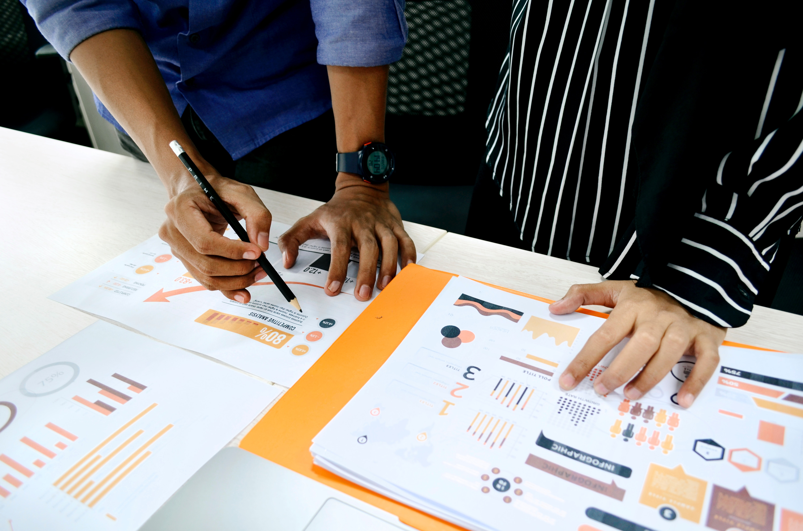
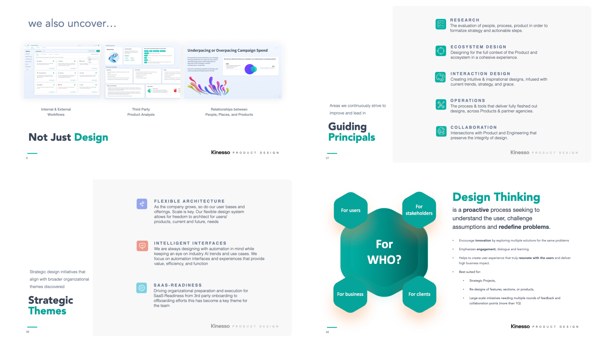
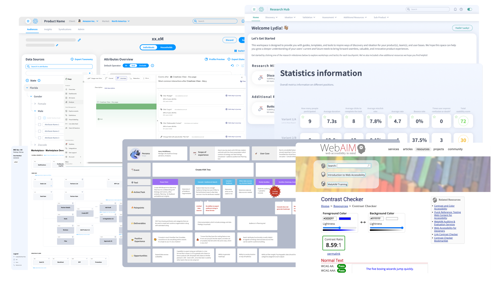
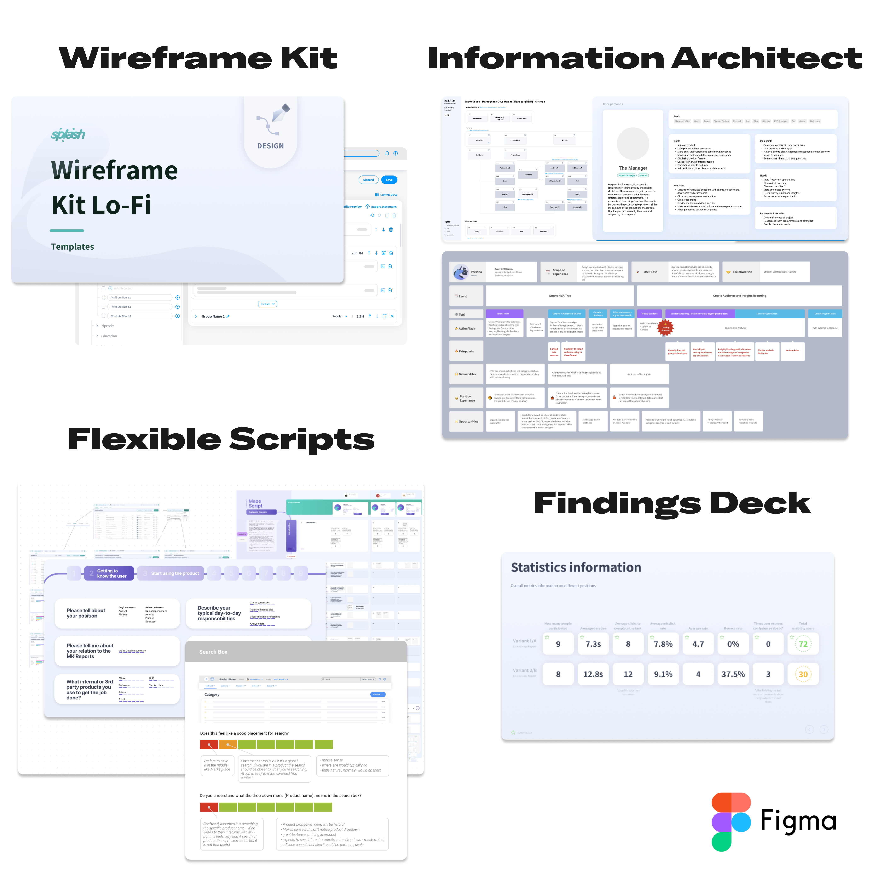
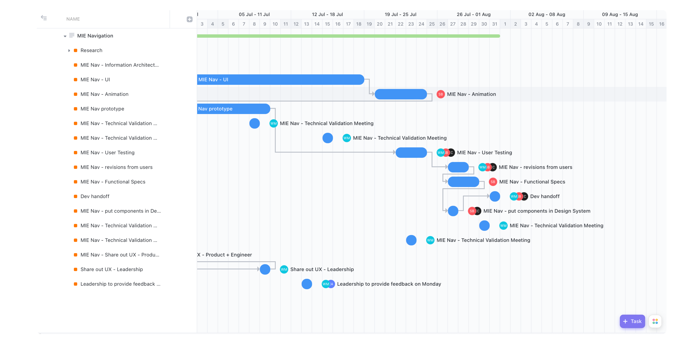

I built the UX research discipline from scratch across a 20+ product Marketing Intelligence Engine, giving product, design, and development teams a repeatable way to learn from users.

Stepping in to create the UX discipline from scratch, I positioned user research as the cornerstone for reshaping a suite of 20+ marketing intelligence products.

I worked across Audiences, Activation, Optimization, and Reporting leads to show how research could improve decisions, user experience, business alignment, and continuous iteration.

The operating model gave teams enough structure to move consistently while adapting to each product, audience, and timeline.


The program relied on consistent communication, personalized follow-up, open-access knowledge, and dedicated beta groups for real-time feedback.
Research became a working system, not a one-off activity.User Research — Kinesso Marketing Intelligence Engine